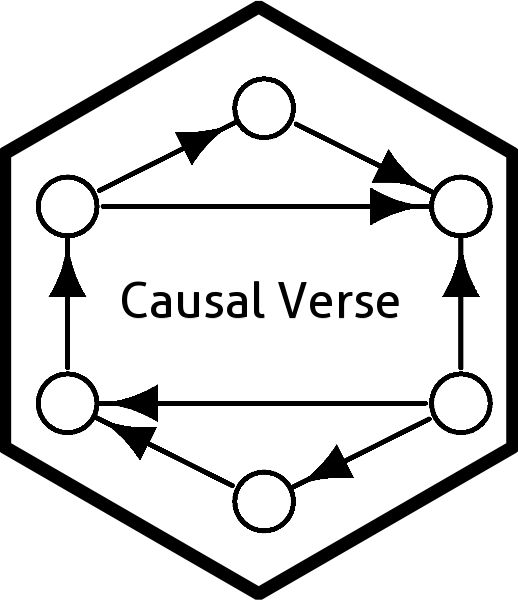

Enhanced Event Study Plot for Difference-in-Differences
did_event_study.RdCreates a comprehensive event study (dynamic DiD) plot with confidence bands, reference period annotation, pre-trends test annotation, and support for multiple estimators on the same plot. Works with fixest, did (Callaway-Sant'Anna), and manually supplied coefficients.
Usage
did_event_study(
models,
ref_period = -1,
ci_type = c("pointwise", "simultaneous"),
conf_level = 0.95,
show_pretrend_test = TRUE,
colors = NULL,
shapes = NULL,
title = "Event Study: Dynamic Treatment Effects",
x_label = "Period Relative to Treatment",
y_label = "Coefficient Estimate",
vline_color = "gray30",
dodge_width = 0.3
)Arguments
- models
Named list of model objects or data frames. Each element is one of:
A
fixestmodel withi()interaction coefficients.A data frame with columns
period,estimate,se(and optionallyci_lower,ci_upper).An
aggteobject from the did package.
- ref_period
Integer. Reference period (normalized to 0). Default
-1.- ci_type
Character. Confidence interval type:
"pointwise"(default) or"simultaneous"(wider, controls overall error rate).- conf_level
Numeric. Confidence level. Default
0.95.- show_pretrend_test
Logical. Annotate with joint pre-trend test result. Default
TRUE.- colors
Character vector. Colors for each model. If
NULL, uses a built-in palette.- shapes
Integer vector. Point shapes. Default: different shapes per model.
- title
Character. Plot title.
- x_label
Character. X-axis label. Default
"Period Relative to Treatment".- y_label
Character. Y-axis label. Default
"Coefficient Estimate".- vline_color
Character. Color of the treatment timing vertical line. Default
"gray30".- dodge_width
Numeric. Horizontal dodge for multiple estimators. Default
0.3.
Examples
if (FALSE) { # \dontrun{
data(base_stagg)
# Single estimator (TWFE)
mod1 <- feols(y ~ i(time_to_treatment, ref = -1) | id + year, base_stagg)
# Sun-Abraham
mod2 <- feols(y ~ sunab(year_treated, year) | id + year, base_stagg)
did_event_study(
models = list("TWFE" = mod1, "Sun-Abraham" = mod2),
ref_period = -1
)
} # }